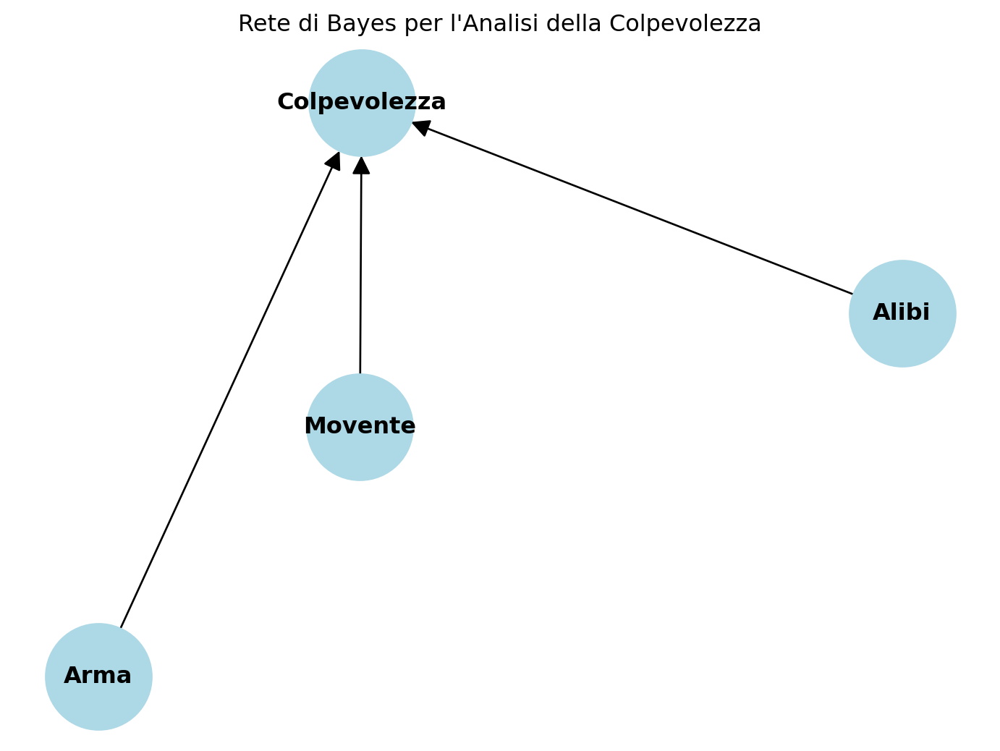

def bayes_theorem(p_a, p_b_dato_a, p_b_dato_not_a):
# Calcola la probabilità di B dato A
p_a_dato_b = (p_b_dato_a * p_a) / (p_b_dato_a * p_a + p_b_dato_not_a * (1 - p_a))
return p_a_dato_b5 Inferenza Bayesiana
5.1 Introduzione
“Mr. Bayes … design … was to find out a method by which we might judge concerning the probability that an event has to happen, in dato circumstances, upon supposition that we know nothing concerning it but that, under the same circumstances, it has happened a certain number of times, and failed a certain other number of times.” - (Richard Price, presentando lo scritto dell’amico Thomas Bayes alla Royal Society of London)
Il Teorema di Bayes, formalizzato dal reverendo Thomas Bayes nel XVIII secolo, è uno strumento fondamentale nell’ambito della statistica e dell’intelligenza artificiale che permette di aggiornare le nostre credenze riguardo ad un’ipotesi sulla base di nuove evidenze. Le tecniche di inferenza basate su questo teorema sono ampiamente utilizzate in diversi campi, dall’analisi dei dati alla diagnostica medica, dalla finanza alla progettazione di algoritmi di machine learning.
5.2 Il Teorema di Bayes
Il Teorema di Bayes fornisce un modo per calcolare la probabilità condizionata di un’ipotesi data l’evidenza osservata. Formalmente, il teorema può essere espresso come:
\[ P(A|B) = \frac{P(B|A) \cdot P(A)}{P(B)} \]
Dove:
- P(A|B) è la probabilità dell’ipotesi A dato l’evidenza B.
- P(B|A) è la probabilità dell’evidenza B dato l’ipotesi A.
- P(A) è la probabilità a priori dell’ipotesi A.
- P(B) è la probabilità dell’evidenza B.
5.3 Applicazioni Pratiche
Diagnostica Medica
Nel campo della diagnostica medica, il Teorema di Bayes è utilizzato per valutare la probabilità che un paziente abbia una certa malattia sulla base dei sintomi presentati e dei risultati dei test di laboratorio. Ad esempio, se la probabilità di un test positivo dato che il paziente ha la malattia e la probabilità che il paziente abbia effettivamente la malattia sono note, il teorema di Bayes può essere impiegato per calcolare la probabilità che il paziente abbia la malattia date le informazioni disponibili.
Finanza
Nel settore finanziario, il Teorema di Bayes viene adoperato per valutare il rischio e formulare previsioni basate su dati storici e informazioni di mercato. Ad esempio, il teorema può essere utilizzato per stimare la probabilità di un evento futuro, come un aumento dei tassi di interesse, sulla base di indicatori economici attuali.
Machine Learning
Nei modelli di machine learning, come le reti bayesiane, il Teorema di Bayes svolge un ruolo chiave nell’aggiornare le probabilità delle variabili all’interno del modello in risposta ai nuovi dati. Questo processo di apprendimento bayesiano consente ai modelli di essere più flessibili ed adattabili all’evoluzione dei dati nel tempo.
diritto penale
Dalle informazioni (false perché inventate dall’ autore :) ottenute da un ipoteticodi un certo tribunale o dal Ministero della Giustizia abbiamo che
- 80% degli imputati condannati hanno precedenti penali P(precedenti/condanna) = 0,8;
- 10% degli imputati sono condannati P(condanna) = 0,1
- 20% degli imputati hanno precedenti penali P(precedenti) = 0,2
Applicando il teorema di Bayes abbiamo che la probabilità che un imputato con precedenti sia condannato è \[ P(cond/prec) = P(cond) \cdot \frac{P(prec/cond)}{P(prec)} = 0,1 \cdot \frac{0,8}{0,2}= 0,4 \]
Si osservi che la probabilità di essere condannati era del 10%. Applicando il teorema di Bayes abbiamo scoperto che la probabilità di essere condannato è del 40% se sappiamo che la persona sottoposta a giudizio ha dei precedenti penali. Ovvero, la probabilità iniziale di essere condannati senza sapere se sono presenti o meno precedenti penali viene moltiplicata per 4 (il cosidetto fattore di Bayes).
Le tecniche di inferenza basate sul Teorema di Bayes forniscono un approccio potente per il ragionamento probabilistico e l’aggiornamento delle credenze in base alle evidenze disponibili. Utilizzate in una vasta gamma di settori, queste tecniche consentono di prendere decisioni informate e di sfruttare al meglio le informazioni a disposizione. La comprensione e l’applicazione corretta del Teorema di Bayes sono cruciali per ottenere risultati accurati e significativi nelle analisi statistiche e nel machine learning.
5.4 reti di Bayes
Una rete bayesiana (BN, Bayesian network) è un modello grafico probabilistico che rappresenta un insieme di variabili stocastiche con le loro dipendenze condizionali attraverso l’uso di un grafo aciclico diretto (DAG).
Per esempio una rete Bayesiana potrebbe rappresentare la relazione probabilistica esistente tra sintomi e malattie. Dati i sintomi, la rete può essere usata per calcolare la probabilità della presenza di diverse malattie. Ogni nodo della BN rappresenta una variabile aleatoria e ogni freccia dal nodo X al nodo Y indica che X è un genitore di Y. Ovvero, indica che la distribuzione probabilistica di Y dipende da X. Ogni nodo ha la distribuzione probabilistica P(X | Genitori(X)). La definizione della topologia di una BN o rete di credenza è affidata ad un esperto di dominio che stabilisce quali nodi e quali relazioni condizionali di dipendenza sono utili per modellare gli eventi del problema in esame. Ciò equivale a definire la conoscenza del mondo in cui può avvenire un evento. Ovvero, la rete rappresenta le assunzioni che si possono fare su quel dominio. Le probabilità condizionate tra i nodi, gli archi della rete, riassumono un insieme potenzialmente infinito di circostanze a noi ignote e che potrebbero influenzare l’evento esprimendo relazioni causali dirette (causa -> effetto). Una volta definita la topologia bisogna specificare la tabella delle probabilità condizionate associata ad ogni nodo. Ogni riga della tabella esprime la probabilità del valore di ogni nodo per un caso condizionante (combinazione di valori dei nodi genitori produttoria delle prob. condiz.) Un nodo con nessun genitore è rappresentato dalla probabilità a priori.
Ad esempio, la seguente rete bayesiana rappresenta la relazione tra gli eventi che possono condizionare l’arrivo puntuale ad un appuntamento usando un mezzo di trasporto come ad esempio un treno.

5.5 laboratorio di Python
5.5.1 Esperimento 1 - Inferenza Bayesiana
La formula di Bayes descrive la probabilità condizionata di un evento A dato un evento B. La formula è la seguente: \[ P(A|B) = \frac{P(B|A) \cdot P(A)}{P(B)} \]
Il denominatore P(B) può essere calcolato nel seguente modo: \[ P(B) = P(B|A) \cdot P(A) + P(B|\neg A) \cdot P(\neg A) \]
Una possibile implementazione in Python della formula di Bayes è la seguente:
Proviamo ad applicare la formula a un semplice caso penale. Immaginiamo di avere le seguenti informazioni:
- P(condanna) = 0.1;
- P(precedenti|condanna) = 0.8;
- P(precedenti|non condanna) = 0.1;
Calcoliamo la probabilità di condanna dato che ci sono precedenti penali.
# Esempio di applicazione al caso penale
# Probabilità a priori
p_precedenti = 0.2 # P(precedenti)
p_condanna = 0.1 # P(condanna)
p_precedenti_dato_condanna = 0.8 # P(precedenti|condanna)
# Calcolo della probabilità di condanna dato che ci sono precedenti
p_condanna_dato_precedenti = bayes_theorem(
p_a=p_condanna,
p_b_dato_a=p_precedenti_dato_condanna,
p_b_dato_not_a=0.1 # P(precedenti|non condanna)
)
fattore_bayes = p_condanna_dato_precedenti / p_condanna
# Stampa i risultati
print(f"La probabilità di condanna a priori è: {p_condanna:.1%}")
print(f"La probabilità di condanna dato che ci sono precedenti penali è: {p_condanna_dato_precedenti:.1%}")
print(f"Il fattore di Bayes è: {fattore_bayes:.2f}")
print(f"Quindi il fatto di sapere che l'imputato ha precedenti penali moltiplica di {fattore_bayes:.2f} volte la probabilità di condanna!")La probabilità di condanna a priori è: 10.0%
La probabilità di condanna dato che ci sono precedenti penali è: 47.1%
Il fattore di Bayes è: 4.71
Quindi il fatto di sapere che l'imputato ha precedenti penali moltiplica di 4.71 volte la probabilità di condanna!5.5.2 Esperimento 2 - Reti bayesiane
Scriviamo insieme il codice Python necessario per creare un modello di Rete Bayesiana per analizzare la probabilità di colpevolezza di un sospetto in un’indagine criminale. Tenendo conto del fatto che i modelli sono sempre un’approssimazione del mondo reale, si può utilizzare la teoria delle reti di Bayes per modellare la probabilità di un evento in base a vari fattori di prova. Il modello considera solo tre elementi di prova: la presenza di un’arma (Arma), un movente (Movente) e un alibi (Alibi), e come questi influenzano la probabilità di colpevolezza (Colpevolezza).
Il codice non richiederà input diretti dall’utente. Invece, definisce la struttura della Rete Bayesiana e imposta le tabelle di probabilità per ciascun fattore basate su valori predefiniti che dovrebbero essere estrapolati da statistiche sulle indagini criminali.
Descrizione del codice
L’output di questo codice è:
- un modello di Rete Bayesiana verificato;
- la stampa del modello;
- la stampa delle Distribuzioni di Probabilità Condizionata (CPD) per ogni variabile nella rete;
- il grafo della rete Bayesiana.
Inizialmente, definiamo la struttura della Rete Bayesiana, mostrando come i fattori di prova (Arma, Movente, Alibi) influenzano la colpevolezza (Colpevolezza). Quindi, definiamo le tabelle di probabilità per ciascun fattore. Ad esempio, la probabilità che un’arma sia presente sia presente sul luogo del delitto la poniamo pari al 70% (0.7) e la sua assenza al 30% (0.3). Più complessa è la definizione della tabella di probabilità per la colpevolezza, che considera tutte le possibili combinazioni dei fattori di prova. Tutte queste tabelle sono aggiunte al modello di Rete Bayesiana. Infine, verifichiamo se il modello è definito correttamente e stampiamo tutte le distribuzioni di probabilità.
La logica chiave in questo codice è come esso rappresenta le relazioni tra diversi elementi di prova e la colpevolezza. Ad esempio, la presenza di un’arma, un movente e la mancanza di un alibi aumenterebbero la probabilità di colpevolezza, mentre la loro assenza la diminuirebbe. Questo è riflesso nella tabella di probabilità per ‘Colpevolezza’, che considera tutte le possibili combinazioni di prove:
| Arma | Motivo | Alibi | P(Non Colpevole) | P(Colpevole) |
|---|---|---|---|---|
| 0 | 0 | 0 | 0.9 | 0.1 |
| 0 | 0 | 1 | 0.99 | 0.01 |
| 0 | 1 | 0 | 0.7 | 0.3 |
| 0 | 1 | 1 | 0.79 | 0.21 |
| 1 | 0 | 0 | 0.5 | 0.5 |
| 1 | 0 | 1 | 0.59 | 0.41 |
| 1 | 1 | 0 | 0.2 | 0.8 |
| 1 | 1 | 1 | 0.1 | 0.9 |
In questa tabella:
- 0 rappresenta l’assenza (di arma, movente o alibi)
- 1 rappresenta la presenza
Le ultime due colonne mostrano le probabilità di non colpevolezza e colpevolezza per ogni combinazione di evidenze
Questa Rete Bayesiana può essere utilizzata per calcolare la probabilità di colpevolezza dato uno scenario di prove, aiutando gli inquirenti a quantificare e ragionare sull’incertezza nei casi criminali.
Caution
Se non abbiamo mai installato le librerie pgmpy, networkx e matplotlib, l’interprete Python segnalerà che pgmpy non è riconosciuta. In questo caso è necessario installare le librerie necessarie eseguendo il seguente blocco di codice:
!pip install pgmpy networkx matplotlibfrom pgmpy.models import BayesianNetwork
from pgmpy.factors.discrete import TabularCPD
# Definizione del modello
model = BayesianNetwork([('Arma', 'Colpevolezza'),
('Movente', 'Colpevolezza'),
('Alibi', 'Colpevolezza')])
# Definizione delle probabilità condizionate
cpd_arma = TabularCPD(variable='Arma', variable_card=2,
values=[[0.7], [0.3]])
cpd_Movente = TabularCPD(variable='Movente', variable_card=2,
values=[[0.6], [0.4]])
cpd_alibi = TabularCPD(variable='Alibi', variable_card=2,
values=[[0.5], [0.5]])
cpd_colpevolezza = TabularCPD(variable='Colpevolezza', variable_card=2,
values=[[0.1, 0.01, 0.3, 0.21, 0.5, 0.41, 0.8, 0.9],
[0.9, 0.99, 0.7, 0.79, 0.5, 0.59, 0.2, 0.1]],
evidence=['Arma', 'Movente', 'Alibi'],
evidence_card=[2, 2, 2])
# Aggiunta delle probabilità condizionate al modello
model.add_cpds(cpd_arma, cpd_Movente, cpd_alibi, cpd_colpevolezza)
# Verifica del modello
print("Il modello è corretto: ", model.check_model())
# Stampa del modello
for cpd in model.get_cpds():
print("CPD di {variable}:".format(variable=cpd.variable))
print(cpd)Il modello è corretto: True
CPD di Arma:
+---------+-----+
| Arma(0) | 0.7 |
+---------+-----+
| Arma(1) | 0.3 |
+---------+-----+
CPD di Movente:
+------------+-----+
| Movente(0) | 0.6 |
+------------+-----+
| Movente(1) | 0.4 |
+------------+-----+
CPD di Alibi:
+----------+-----+
| Alibi(0) | 0.5 |
+----------+-----+
| Alibi(1) | 0.5 |
+----------+-----+
CPD di Colpevolezza:
+-----------------+------------+-----+------------+------------+
| Arma | Arma(0) | ... | Arma(1) | Arma(1) |
+-----------------+------------+-----+------------+------------+
| Movente | Movente(0) | ... | Movente(1) | Movente(1) |
+-----------------+------------+-----+------------+------------+
| Alibi | Alibi(0) | ... | Alibi(0) | Alibi(1) |
+-----------------+------------+-----+------------+------------+
| Colpevolezza(0) | 0.1 | ... | 0.8 | 0.9 |
+-----------------+------------+-----+------------+------------+
| Colpevolezza(1) | 0.9 | ... | 0.2 | 0.1 |
+-----------------+------------+-----+------------+------------+Possiamo anche visualizzare la rete di Bayes con il seguente codice:
import networkx as nx
import matplotlib.pyplot as plt
# Assumendo che 'model' sia il tuo BayesianNetwork già definito
G = nx.DiGraph()
G.add_edges_from(model.edges())
pos = nx.spring_layout(G)
nx.draw(G, pos, with_labels=True, node_color='lightblue',
node_size=3000, arrowsize=20, font_size=12, font_weight='bold')
plt.title("Rete di Bayes per l'Analisi della Colpevolezza")
plt.axis('off')
plt.show()
Infine, una volta costruita la rete di Bayes possiamo interrogarla per avere una stima della probabilità di un determinato evento. Qual è la probabiltà che un indagato senza alibi, senza movente e in assenza di arma del delitto sia colpevole?
from pgmpy.inference import VariableElimination
# Creiamo un oggetto per l'inferenza
inference = VariableElimination(model)
# Definiamo l'evidenza per la situazione descritta
evidence = {
'Alibi': 0, # 0 rappresenta l'assenza di alibi
'Movente': 0, # 0 rappresenta l'assenza di motivo
'Arma': 0 # 0 rappresenta che l'arma non è stata trovata
}
# Calcoliamo la probabilità di colpevolezza dato l'evidenza
result = inference.query(['Colpevolezza'], evidence=evidence)
# Stampiamo il risultato
print("Probabilità di colpevolezza:")
print(result.values[0])
print("Probabilità di innocenza:")
print(result.values[1])Probabilità di colpevolezza:
0.1
Probabilità di innocenza:
0.9from pgmpy.inference import VariableElimination
# Creiamo un oggetto per l'inferenza
inference = VariableElimination(model)
# Definiamo l'evidenza per la situazione descritta
evidence = {
'Alibi': 1, # 1 rappresenta la presenza di alibi
'Movente': 0, # 0 rappresenta l'assenza di motivo
'Arma': 0 # 0 rappresenta che l'arma non è stata trovata
}
# Calcoliamo la probabilità di colpevolezza dato l'evidenza
result = inference.query(['Colpevolezza'], evidence=evidence)
# Stampiamo il risultato
print("Probabilità di colpevolezza:")
print(result.values[0])
print("Probabilità di innocenza:")
print(result.values[1])Probabilità di colpevolezza:
0.01
Probabilità di innocenza:
0.995.6 Esercizi
5.6.1 Esercizio 1: teorema di Bayes
Supponiamo di avere raccolto informazioni su 1.000 casi penali. Per ogni caso, sono state raccolte le seguenti informazioni:
- Alibi del sospettato (Sì/No)
- Testimone oculare presente (Sì/No)
- Condanna del sospettato (Sì/No)
Il dataset (l’insieme dei dati raccolti) è il seguente:
| Alibi | Testimone Oculare | Condanna | Numero di Casi |
|---|---|---|---|
| Sì | Sì | Sì | 50 |
| Sì | Sì | No | 20 |
| Sì | No | Sì | 30 |
| Sì | No | No | 100 |
| No | Sì | Sì | 200 |
| No | Sì | No | 50 |
| No | No | Sì | 150 |
| No | No | No | 400 |
| totale | - | - | 1.000 |
Si vuole comprendere l’impatto della assenza di un alibi sulla probabilità di condanna. A questo scopo, si applichi il teorema di Bayes per calcolare la probabilità che un sospettato venga condannato dato che non ha un alibi, cioè \(P(\text{Condanna} = \text{Sì} \mid \text{Alibi} = \text{No})\). Per comodità si riporta qui di seguito la formula del teorema di Bayes applicata a questo caso specifico:
\[ P(\text{Cond} = \text{Sì} \mid \text{Alibi} = \text{No}) = \frac{P(\text{Alibi} = \text{No} \mid \text{Cond} = \text{Sì}) \times P(\text{Cond} = \text{Sì})}{P(\text{Alibi} = \text{No})} \]
Ovvero, per risolvere l’esercizio occorre trovare i seguenti valori:
- \(P(\text{Alibi} = \text{No} \mid \text{Cond} = \text{Sì})\)
- \(P(\text{Cond} = \text{Sì})\)
- \(P(\text{Alibi} = \text{No})\)
5.6.2 Esercizio 2: Fattore di Bayes
Si calcoli il fattore di Bayes per l’inferenza Bayesiana studiata nell’esercizio 1.
5.6.3 Esercizio 3: Probabilità a posteriori
Si calcoli la probabilità che un sospettato venga condannato dato che non ha un alibi e che non ha un testimone oculare.